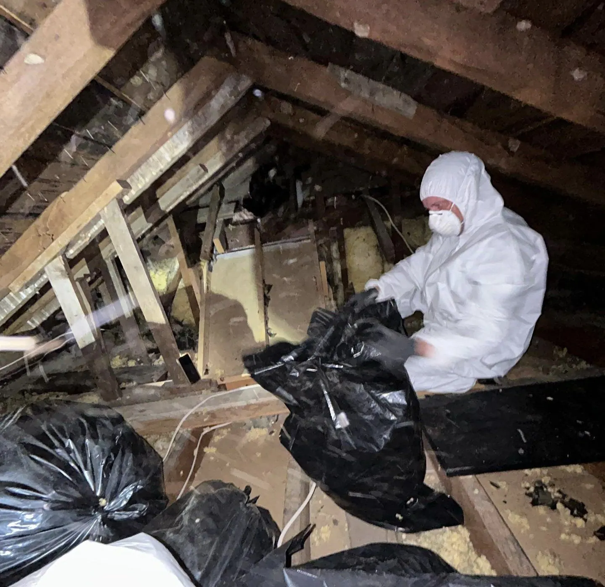

Attic Restoration.
Rebuild what they damaged.
Animals damage attics — insulation, clean space, and air quality. Restoration cleans and rebuilds what they damaged, after removal and sealing.
What restoration includes
- Cleanouts
- Insulation removal
- Disinfection
- Insulation installation

When it applies
Restoration follows removal and exclusion — first the animal is out, then the entry is sealed, then the attic is restored. Every step is documented in writing.